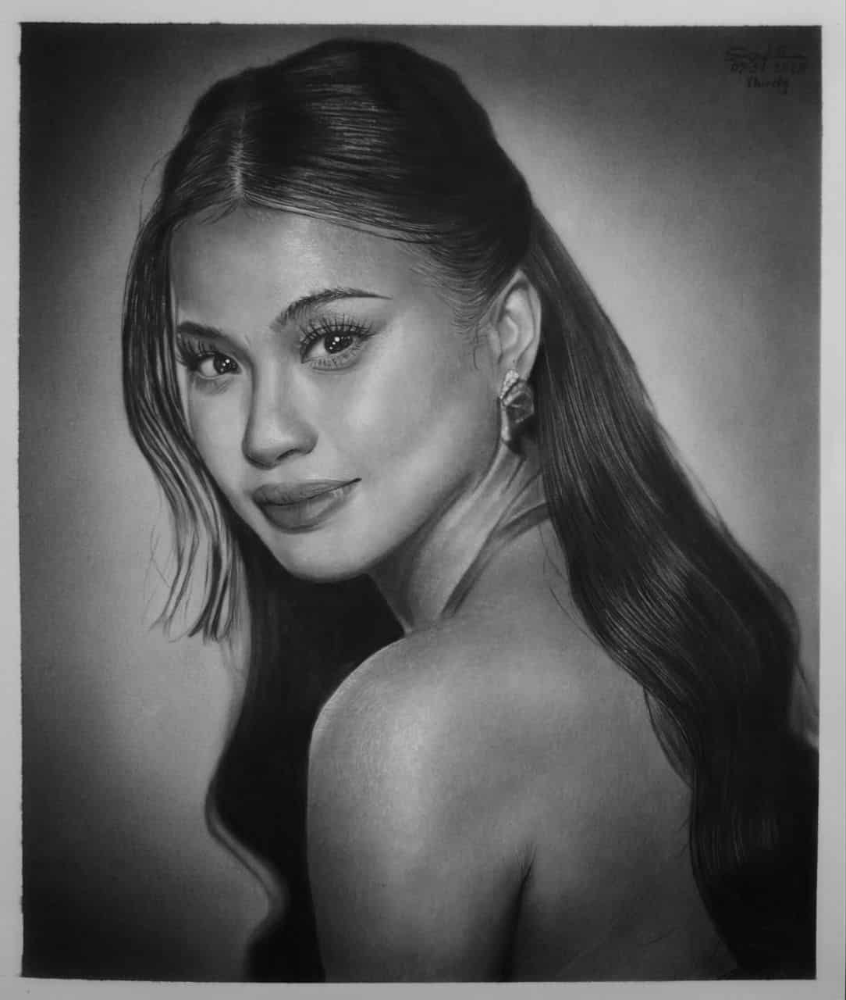
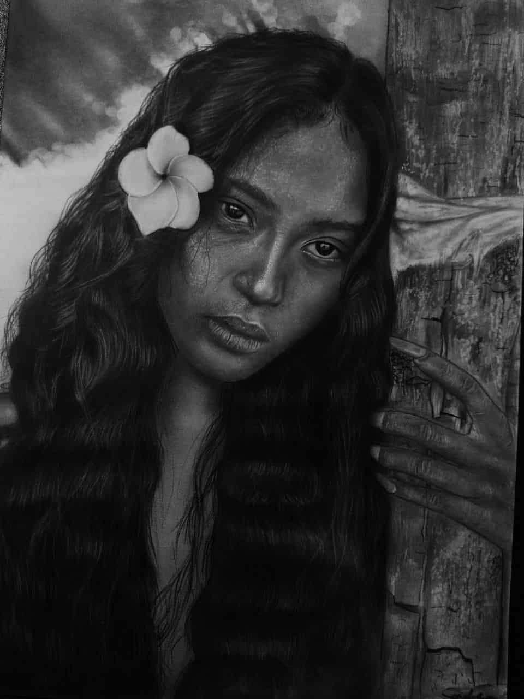
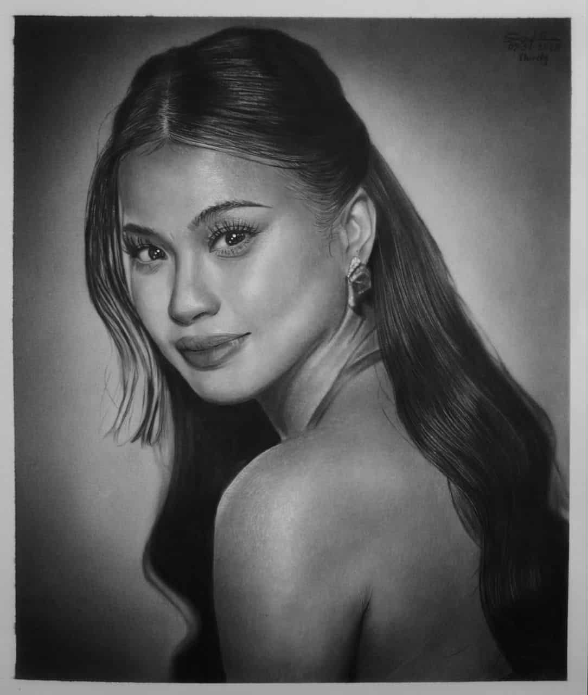
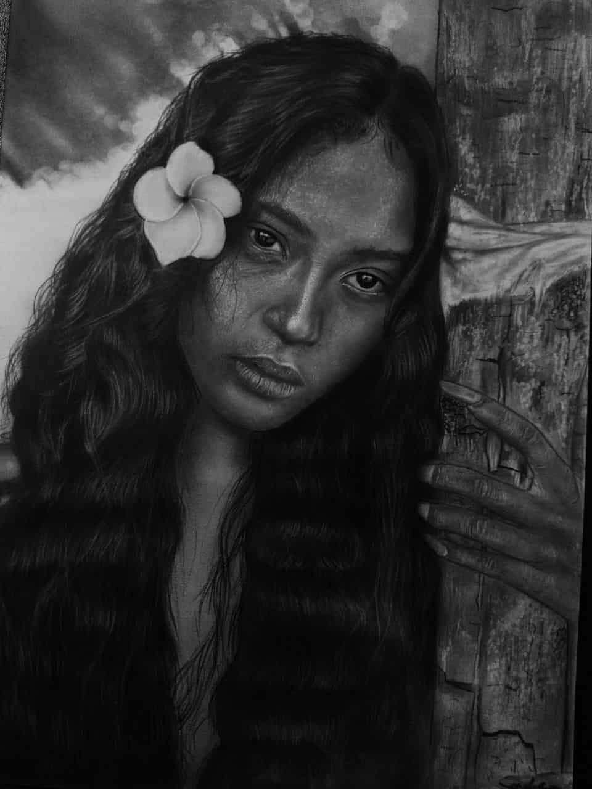

ARTHUB
Maligayang pagdating sa aming Pahina!
Ang aming layunin ay lumikha ng isang bukas at makulay na espasyo para sa lahat ng mahilig sa sining.
Dito sa ArtHUB, hinihikayat namin ang bawat isa na magpahayag ng kanilang sarili sa pamamagitan ng sining—mula sa pagguhit, pagpipinta, digital art, hanggang sa iba’t ibang malikhaing anyo.
Inaanyayahan namin ang lahat ng artists, baguhan man o propesyonal, na maging bahagi ng aming komunidad. Sa pamamagitan ng pagtutulungan at pagbabahagi ng talento, sama-sama nating bubuo ng isang pamayanang nag-uudyok ng inspirasyon, pagkatuto, at pagkakaibigan.
Sumali na at maging kabahagi ng isang komunidad na tunay na nagpapahalaga sa sining at malikhaing pagpapahayag.
Selling, Commissions, and Bidding
ArtHUB ·
In today’s creative world, artists have many opportunities to share their work beyond simple exhibitions. Selling artworks allows creators to earn directly from their passion, whether through physical galleries or online platforms. By offering their creations for sale, artists not only gain income but also connect with people who truly appreciate their work.
Commissions open another exciting door for artists. Clients can request personalized pieces that capture unique ideas, stories, or emotions. Accepting commissions gives artists the chance to grow, adapt to different challenges, and expand their portfolio with meaningful projects.
Art bidding, on the other hand, provides a dynamic way of valuing creativity. Through auctions, artworks can find their highest worth as collectors and art lovers place bids. This not only rewards the artist but also highlights the true demand and appreciation for their craft.
Whether selling, accepting commissions, or participating in art bidding, each step helps artists build sustainable careers and strengthen the community of creatives who inspire one another.
.jpg) 



Types of Art

Charcoal Drawing
Charcoal drawing is one of the most expressive and versatile forms of art. It allows artists to create deep shadows, bold lines, and soft shading with ease. By using different types of charcoal such as vine or compressed sticks, you can experiment with textures and tones that bring a drawing to life.
To start, lightly sketch your outline with a pencil before applying charcoal. Smudging with fingers or blending stumps helps in achieving gradients and realistic effects. Erasers also play a vital role in creating highlights and refining details within the piece.
Mastering charcoal requires patience and control, but it is an excellent medium for capturing emotions, portraits, and dramatic compositions. It is often chosen by beginners and professionals alike for its ability to produce striking contrasts and quick results.

Color Pencil Drawing
Color pencil art is widely appreciated for its vibrant tones and precision. With layering techniques, artists can achieve realistic shading, smooth gradients, and detailed textures. High-quality colored pencils allow for richer pigmentation and blending.
To begin, start with light layers of color and gradually build them up. Pressing harder with the pencil produces darker tones, while lighter strokes add subtlety. Blending tools or even tissue paper can be used to merge colors seamlessly.
This medium is ideal for beginners because it is clean, portable, and easy to control. Whether used for portraits, landscapes, or imaginative works, colored pencils offer endless possibilities for creative expression.

Painting (Oil / Acrylic / Watercolor)
Painting is one of the oldest and most dynamic forms of art, ranging from classical oil paintings to modern acrylics and watercolors. Each medium offers unique qualities—oils provide depth and blending time, acrylics dry quickly and allow layering, while watercolors create soft and translucent effects.
The process usually begins with preparing a canvas or paper and sketching a light outline. Artists then apply layers of paint using brushes, palette knives, or even unconventional tools to achieve their desired textures and styles.
Painting encourages experimentation and creativity, making it an essential practice for both beginners and experienced artists. It is a timeless way to express ideas, emotions, and beauty through vibrant colors and brushstrokes.

Graphite Drawing
Graphite drawing is a classic and widely practiced art form, often associated with sketching and detailed studies. It is flexible, allowing artists to create fine lines, soft shading, and intricate textures using pencils of varying hardness.
To start, select the right grade of graphite pencil—softer pencils (B) are darker and great for shading, while harder pencils (H) are lighter and useful for fine details. Blending stumps or tissues help smooth out the shading for realistic effects.
This medium is beginner-friendly yet sophisticated enough for advanced artworks. Graphite drawing is perfect for practice, learning proportions, and developing precision, making it a foundation for many aspiring artists.

Pointillism
Pointillism is a painting technique that uses tiny dots of color placed closely together to form an image. When viewed from a distance, the dots blend visually to create vibrant scenes.
This technique, pioneered by Georges Seurat, emphasizes precision and patience. Artists use small brushstrokes or pen points to build texture, color depth, and light.
It is a rewarding style that teaches patience and a deeper understanding of color theory and optical mixing.

Impressionism
Impressionism focuses on capturing the fleeting effects of light and color in a scene rather than precise detail. Artists use loose brushwork and vibrant palettes.
It emerged in 19th-century France and revolutionized art by emphasizing mood and atmosphere over realism.
This style is perfect for experimenting with lighting, seasons, and spontaneous outdoor painting.

Abstract Art
Abstract art breaks away from realistic representation and uses shapes, colors, and forms to express emotions or ideas.
It allows complete creative freedom and encourages viewers to interpret the artwork in their own way.
This style is ideal for exploring pure expression and emotion without the constraints of realism.

Cubism
Cubism deconstructs subjects into geometric shapes and reassembles them in abstract compositions.
Founded by Pablo Picasso and Georges Braque, it emphasizes multiple perspectives in one artwork.
This approach challenges traditional viewpoints and inspires innovative thinking.

Surrealism
Surrealism blends dreamlike imagery with reality, often producing strange or fantastical scenes.
Inspired by the subconscious, it allows artists to express thoughts beyond rational understanding.
It’s ideal for storytelling and imaginative concept exploration.

Digital Art
Digital art uses software and digital tools to create illustrations, paintings, and designs.
It offers limitless possibilities for editing, layering, and experimentation.
Perfect for modern artists exploring animation, concept art, and visual media.

Mixed Media
Mixed media combines multiple art forms, such as painting, collage, and drawing, into one piece.
It allows for creative freedom and texture exploration, often producing unique results.
This style encourages experimentation with unconventional materials.

Graffiti Art
Graffiti art transforms public spaces into vibrant canvases using spray paint and bold designs.
It often carries social or political messages and emphasizes self-expression.
This style blends art with activism and community engagement.

Collage Art
Collage art involves assembling different materials like paper, photos, and fabric into a single artwork.
It creates new narratives by combining diverse elements into cohesive compositions.
This style encourages recycling materials into meaningful stories.

Line Art
Line art uses simple lines without shading or color to define form and structure.
It highlights composition, proportion, and movement in its purest form.
This minimalist style is excellent for developing drawing fundamentals.

Pop Art
Pop Art celebrates popular culture with bold colors and imagery from advertising, comics, and media.
It challenges traditional fine art by blending high and low culture.
This playful style is eye-catching and impactful.